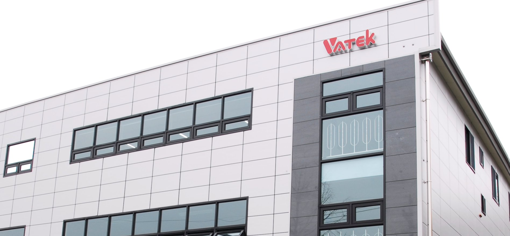
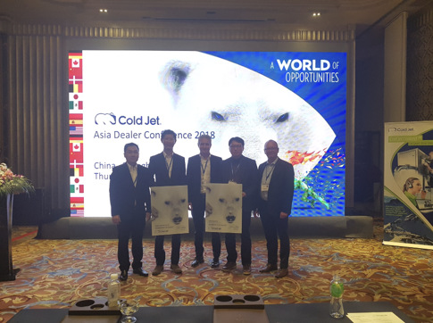
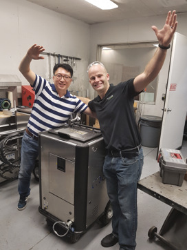
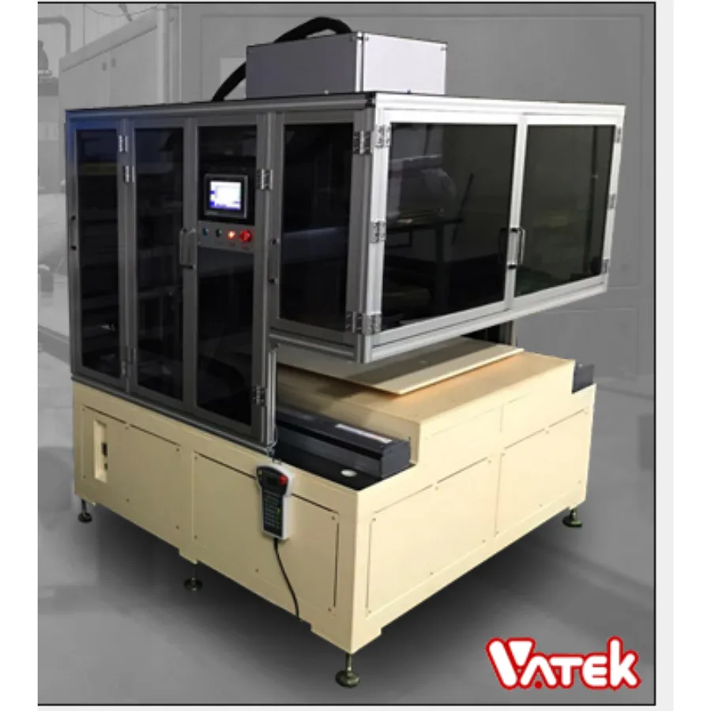
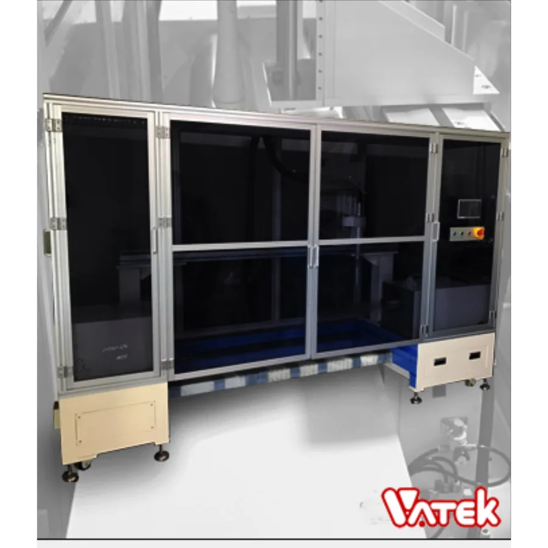
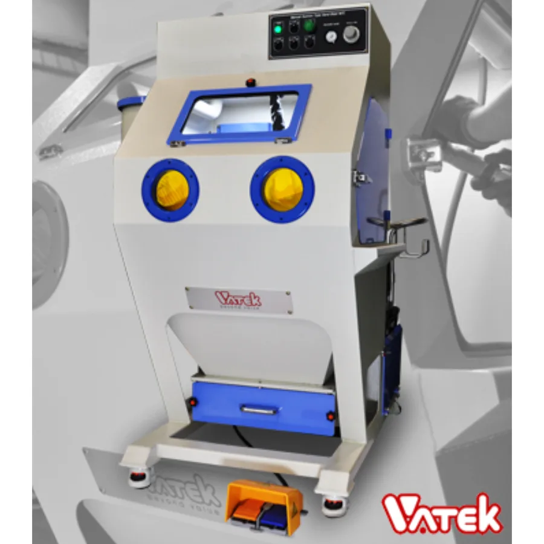
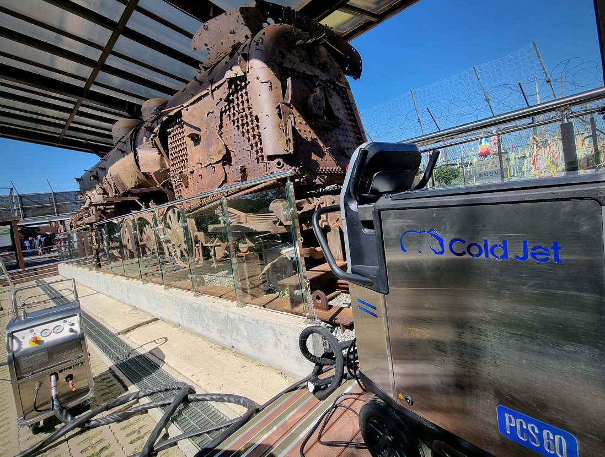
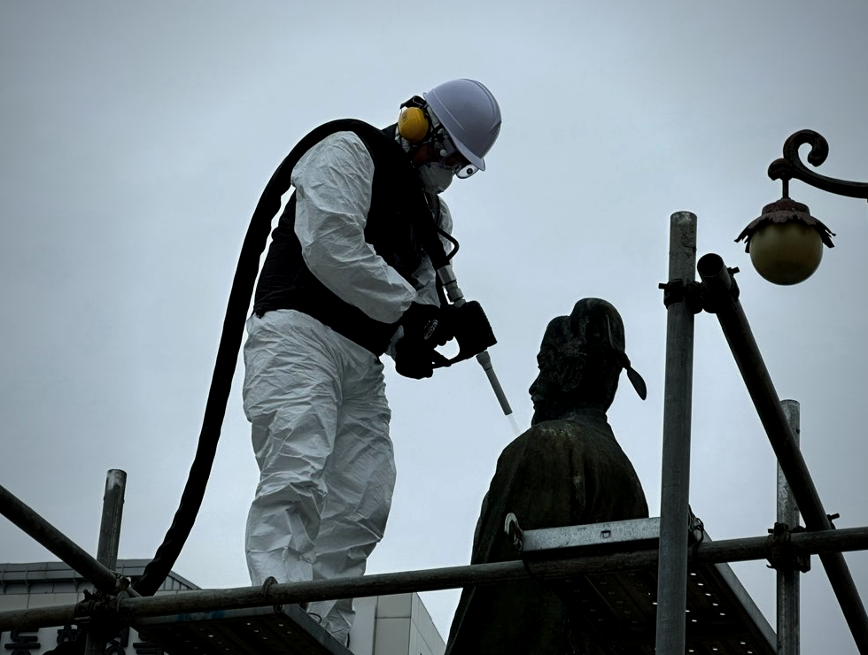
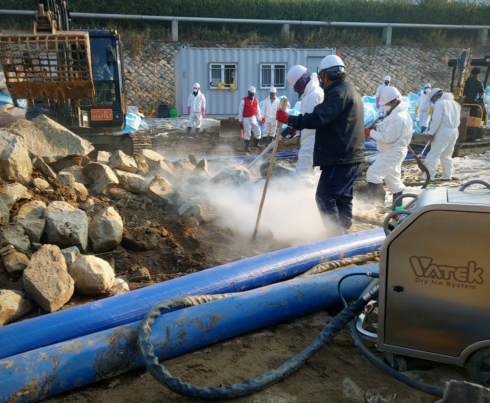
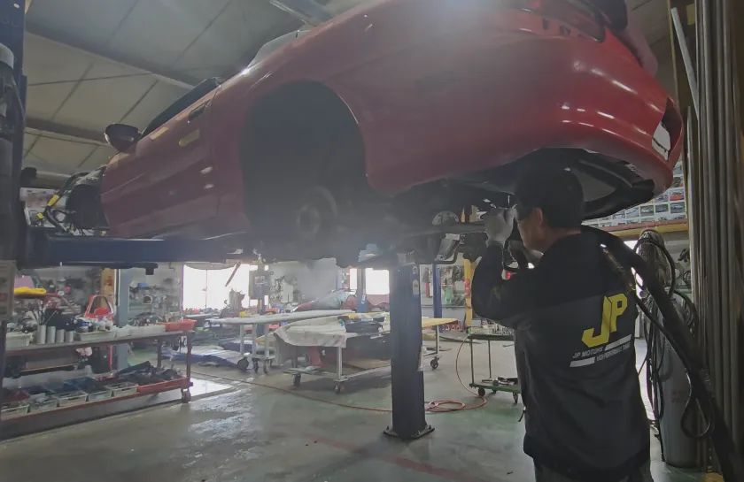

연구소 시료 테스트
2014년 하남 본사에 설립한 기업부설연구소에서 고객의 시료로 세척 조건을 직접 찾습니다. 테스트 방법과 비용은 데모 테스트 안내에서 확인하실 수 있습니다.
데모 테스트 안내 →
바테크는 1988년에 창립한 Cold Jet 대한민국 공식 대리점입니다. 하남 본사에 기업부설연구소를 두고, 드라이아이스를 직접 생산하며, 자동 세척 설비를 직접 설계하고 제작합니다.
외부에서 확인할 수 있는 항목에는 출처를 함께 적었습니다.
바테크는 시료 테스트, 드라이아이스 생산, 세척 설비 제작, 설치와 A/S를 직접 하고 있습니다. 각 항목의 자세한 내용은 해당 페이지에서 확인하실 수 있습니다.
2014년 하남 본사에 설립한 기업부설연구소에서 고객의 시료로 세척 조건을 직접 찾습니다. 테스트 방법과 비용은 데모 테스트 안내에서 확인하실 수 있습니다.
데모 테스트 안내 →순도 99.99% 이상의 액화탄산을 원료로 드라이아이스를 직접 생산하고, 포장과 출고까지 관리합니다. 전국에 발송하며 일반적으로 발송 다음 날 도착합니다.
드라이아이스 구매 →고객의 제품과 생산 라인에 맞춰 세척 설비를 직접 설계, 제작, 설치합니다. 플레이트 자동 세척기와 롤 자동 세척기 등을 국내 현장에 공급했습니다.
제작한 설비 보기 →Cold Jet의 공식 교육을 매년 받는 기술지원 담당자가 설치와 운용 교육, 점검과 수리를 직접 진행합니다. 접수 기준과 처리 절차는 교육 및 A/S에서 안내합니다.
교육 및 A/S →블라스터 4종을 하루 단위부터 렌탈합니다. 출고 전에 시험 작동을 마친 장비를 보내 드립니다.
V RENTAL →자주 쓰는 노즐과 소모품은 국내 재고를 유지하고, 그 외 품목은 Cold Jet에서 직접 수입합니다.
부품 공급 안내 →세척 조건 설계, 공정 적용 검토, 자동화 검토, 안전 기준 안내를 자료로 정리해 드립니다.
기술지원 안내 →바테크의 운용 및 안전 교육을 이수한 세척용역 업체에 인증서를 발행하고 소개합니다.
인증 파트너 →Cold Jet은 전 세계의 공식 대리점을 자사 사이트에 공개하고 있으며, 대한민국에는 Vatek Corporation이 등록되어 있습니다. 아래의 Cold Jet 관련 내용은 Cold Jet이 공개한 자료를 기준으로 정리했습니다.
Cold Jet은 공식 대리점을 해당 국가에서 Cold Jet 장비를 판매하고, 설치하고, 서비스하도록 승인한 독립된 회사로 설명합니다.
바테크는 Cold Jet 장비의 판매, 설치, 운용 교육, A/S, 부품 공급을 국내에서 직접 진행합니다. 고객은 바테크의 국내 서비스와 Cold Jet 글로벌 기술팀의 지원을 함께 받습니다.
Cold Jet 공식 사이트의 대리점 목록에서 직접 확인하실 수 있습니다. coldjet.com 대리점 목록 ↗
미국 오하이오에서 설립. 바테크도 같은 해에 창립했습니다.
전 세계에서 보유한 특허
60개국 이상에 설치한 장비
11개국의 직영 서비스 센터. 공식 대리점은 29곳
Cold Jet 관련 수치는 Cold Jet 공식 사이트의 공개 자료 기준입니다(2026년 11월 확인).




바테크는 고객의 제품과 생산 환경에 맞는 공정을 먼저 설계하고, 그 공정에 맞춰 설비를 직접 설계, 제작, 설치합니다. 아래는 실제로 국내 현장에 공급한 바테크 자체 제작 설비입니다.
공정을 설계한 곳에서 설비를 제작하고 유지관리까지 맡습니다. 설치 후에는 세척 패턴을 함께 설정하고 운전 및 유지관리 교육을 진행합니다.
바테크 맞춤 설비 →
워크사이즈 1200 × 1200 mm. 직교로봇이 플레이트의 모든 면을 세척합니다.

최대 ø350 × 1500 mm. 그라비아 롤 세척에 많이 쓰이며 개당 10–20분이 걸립니다.

드라이아이스와 샌딩을 풋 페달로 바로 전환하는 밀폐 캐비닛형 장비입니다.
바테크의 장비와 세척 조건으로 진행한 국내 현장의 사진입니다. 세척 서비스가 필요하시면 바테크의 운용 및 안전 교육을 이수한 인증 파트너를 연결해 드립니다.

야외에 전시된 증기기관차에 쌓인 분진과 유막을 물 없이 제거한 작업입니다.

화학약품과 연마재를 쓰지 않고 금속 조형물 표면의 오염을 제거한 작업입니다.

유출된 기름의 잔여물을 세척수 없이 바닥과 구조물에서 제거한 작업입니다.

인증 파트너 제이피모터스(경기 용인)가 리프트에 올린 차량의 하부를 세척하는 모습입니다.